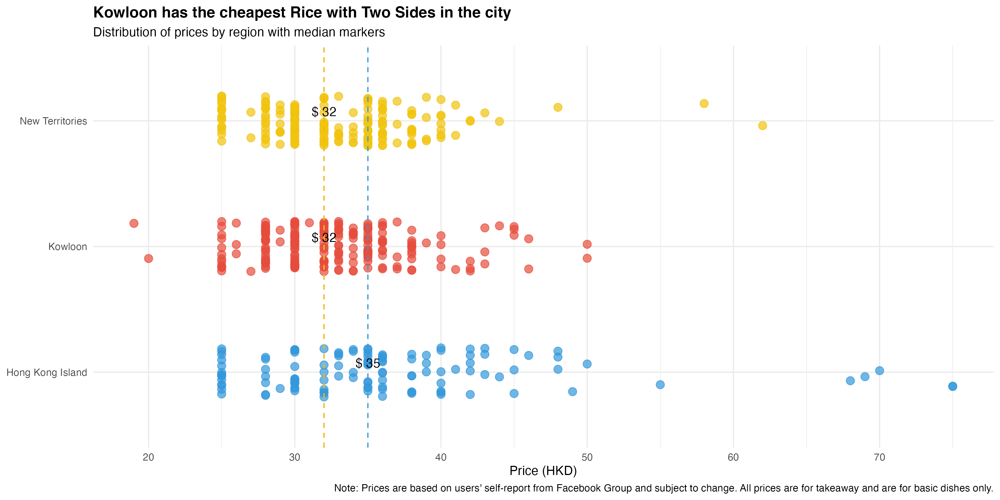
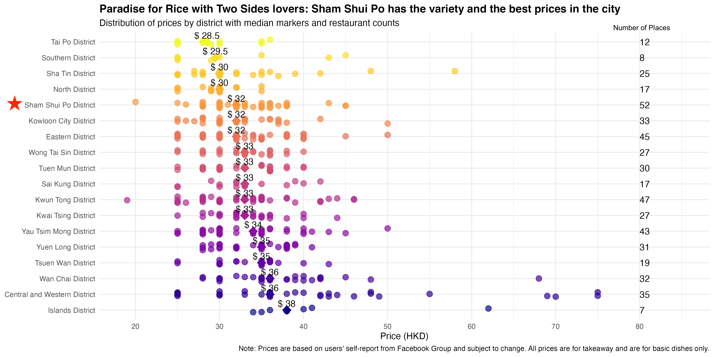
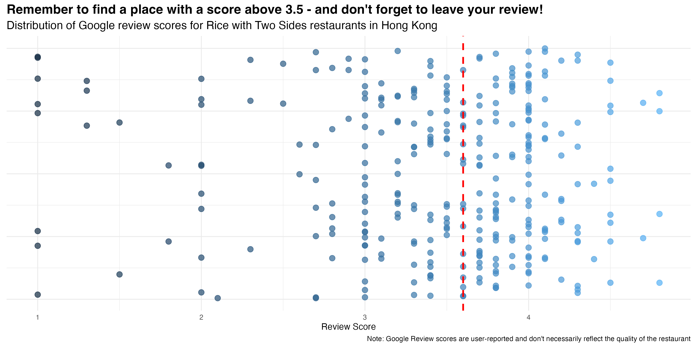
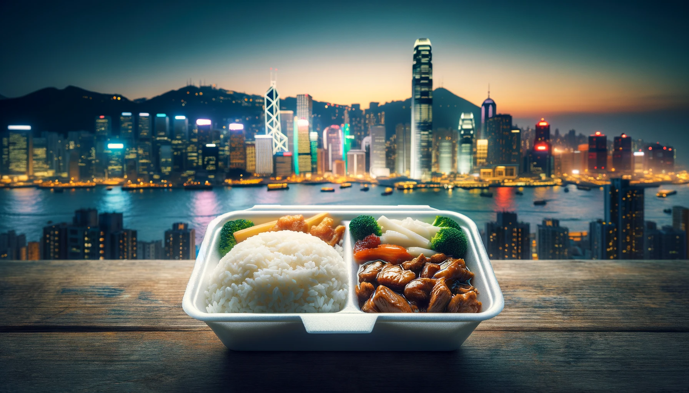

It's lunch time in Central. Like CBDs elsewhere in the world, food courts are always occupied by hungry office workers - here in Hong Kong, most of them are in the financial industry or expatriates. Besides choosing all the 鬼佬 ("gweilo", a White person) food such as salads and sandwiches, many of them flocked to a stall. What is sold here is the delicacy of the grassroot in Hong Kong - 兩餸飯 (“Rice with two sides”).
This is what happened early this year when a stall opened in the prime location of Two ifc. Although a two-meal rice set priced at HKD75 ($9.5) felt a bit 搵笨 ("rip-off"), the constant flow of people made me curious about the changes that are happening in this city with the most diverse food in the world.
Rice with two sides has never been a fancy food - whether it was tasted by the American consul or not. Like similar variations in other Chinese communities of Taiwan and Singapore, Hong Kong's Rice with two sides have been a grassroots food to satisfy hunger since its inception. The concept gained widespread popularity during the 1960s, particularly within factory canteens and small stalls near schools, catering primarily to a clientele of blue-collar workers, lower-income individuals, and students. This meal option became renowned for its affordability, decent quality, and straightforwardness, often described as good value for money (or in Cantonese, “平靚正”).
The past two years, however, have seen a drastic increase in Rice with Two Sides places in Hong Kong. This is partly due to the significant challenges the city faced during the COVID-19 pandemic when the government banned dine-in services for an extended period (Rice with Two Sides is most commonly served as take-away, “拎走”). On the other hand, noticeable economic downturns and global supply chain disruptions, leading to soaring prices, have caused the city's residents to focus more on optimizing their food choices.

After all, the fancy place like the one mentioned at the beginning is only a minority. Most of the time, the consumer group of Rice with two sides is very price sensitive. As dim sum houses and supermarkets have also joined this craze, Rice with two sides places have sprouted up in all districts in Hong Kong in the past two years with competition of price with each other, this also give people the impression that “there is no cheapest, only cheaper”. A Facebook concern group, and a user-reported Google Map, were set up for Rice with two sides lovers to exchange information (and for me to get data).

The price of Rice with two sides is affected by many factors. As everyone in the city knows, in the “atas” areas of Hong Kong Island, rent often accounts for a large part of the cost of running a business, so food prices cannot be cheap. In Sham Shui Po, where more middle- and lower-class people live, there are not only many choices for Rice with two sides, but the prices are also affordable - you can even find great deals of less than HKD30 ($3.8).

Of course, price is not the only reference factor. Even budget delicacies like Rice with two sides must be properly served and delicious. One of the important tips is matching. Dishes with a lot of sauce, such as sweet and sour pork, curry chicken, and braised pork knuckles are great with rice, but if paired together, it will be too soupy. In addition, if you want to get enough fiber, it is best to get vegetarian sides such as stir-fried broccoli, “Buddha's delight”, and braised luffa. An earlier survey pointed out that the most favorite dish among Hong Kong residents is salt and pepper pork chop.

The business of Rice with two sides has surged due to the pandemic, but few people pay attention to the environmental issues behind it. Since most places only offer takeout, the amount of disposable tableware used is staggering. In 2020 alone, when the pandemic was the worst, Hong Kong people threw away 266 tons of disposable tableware. As the government will introduce garbage charges and ban some disposable tableware within this year, I believe that the way Hong Kong people consume Rice with two sides will also become more sustainable.
Well, I'm going to stop here and go for my dinner - probably the Rice with two sides leftove

A box of "Rice with two sides" with Hong Kong's skyline, generated by OpenAI.